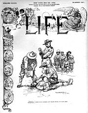

“I did like it [soldiering] in the old days, back when the prerequisite of a British campaign was that the enemy should under no circumstances carry guns. Even spears made us think twice.... The kind of people we liked to fight were two feet tall and armed with dried grass.... No, when I joined up, I never imagined anything as awful as this war. I had 15 years of military experience, perfecting the art of ordering a pink gin and [mastering the intricacies of propositioning local women in their native tongue], and then, suddenly, a half million Germans hove into view....”
For imperial powers, every war is supposed to be the geopolitical equivalent of a homecoming game: The opponents are carefully selected to guarantee that the “good guys” not only win, but run up the score and pad their individual statistics.
The biggest difference, of course, is that such “homecoming games” are always fought on the other country's home turf. But the point, as Captain Blackadder acknowledged just before going “over the top” to be pitilessly cut apart by German machine guns, is that imperial warfare is a lot of fun until the Empire's soldiers are thrown into combat against people who know how to fight back.
Barely a century passed between America's War of Independence and the emergence of an imperial ruling caste in Washington. Even before the 1890 Massacre at Wounded Knee (for which twenty soldiers were awarded Medals of Honor for gallantry of the type displayed by Captain Blackadder's African regiment) heralded the fulfillment of Manifest Destiny, powerful and ambitious figures were seeking to build an overseas American Empire.
One of the first lands to fall beneath this esurient gaze was the Kingdom of Hawaii, which was already under the rule of a corporatist sugar plantation clique. In 1887, that clique, with the full support of Washington, blessed the Islands with a constitution that thoughtfully removed from the native Hawaiians the burden of self-government.
Known as the “Bayonet Constitution” -- since, like all such acts of imperial liberation it was backed with the overt threat of punitive military action – the charter “gave all Americans and Europeans, even non-citizens, the right to vote” while denying it to the majority population of Asian laborers, explains Stephen Kinzer in his fascinating book Overthrow: America's Century of Regime Change from Hawaii to Iraq.

Cabal: The "Provisional Government" of Hawaii, shortly after seizing power in January 1893.
The author of the Bayonet Constitution was attorney Lorrin Thurston, an agent of the cabal that sought to steal the Islands on behalf of corporatist interests. Thurston imposed himself on the Hawaiian government as its interior minister and used that position to plot the overthrow of the puppet kingdom, which was consummated in January 1893.
At the time of the coup, the reigning Hawaiian monarch was Queen Lilioukalani, whose brother Kalakua was the puppet king who signed the 1887 Bayonet Constitution. Lilioukalani, a Christian believer who was educated in missionary schools, was made of sterner stuff than her brother: She described his capitulation – symbolized by the loss of Pearl Harbor to American control – as “a day of infamy in Hawaiian history.”

Fifty-four years later, Clio must have been left apoplectic with laughter when essentially the same phrase came from the lips of a U.S. President as he described an attack on the same Pearl Harbor by another imperial power. And the next thirty-three months offered many career military men – some of them, perhaps, old enough to have been alive when Lilioukalani described the first Hawaiian “day of infamy” -- abundant opportunities to voice their own versions of Captain Blackadder's lament.
Obviously it would have been much more fun to fight grass-skirted, poorly-armed natives, than to engage the very competent and uniformly brutal forces of another industrialized empire.
We are ritually instructed to remember Pearl Harbor in the least reflective way possible. Yes, the Japanese attack was a vicious act of aggression. This is true even though Washington was doing everything it could to provoke and even facilitate that attack as a back door into a war in Europe. I like to refer to Admiral Yamamoto, the architect of the attack who was not enamored of the idea of war with the US, as “FDR's most important collaborator in the attack on Pearl Harbor.”
The perfidy of our ruling elite does not exonerate Imperial Japan. That being said, this must be also: Japan's assault on Pearl Harbor, and much of what followed, usefully illustrates how Washington's interventionist foreign policy sows the seeds of future tragedies, often in ways most people simply can't anticipate. After all, if Thurston and his tiny knot of conspirators hadn't been backed up by the US Marines when they seized control of Hawaii in January 1893, it's likely there would have been no naval base at Pearl Harbor for the Japanese to attack in December 1941.
Imperial Japan's behavior in the occupied Philippines – particularly the Bataan Death March – looms very large in any retelling of the crimes of the Imperial Japanese (which were plentiful and entirely horrifying). But relatively few of the Americans who recall the unutterable atrocities visited on US servicemen by the Japanese take a moment to ask why there were American military personnel in the Philippines in the first place. And fewer still recall that roughly a half-century prior to the Pacific War, the cruelties inflicted on Filipino fighting men by American occupation forces were at least as vicious as those later inflicted by the Japanese on both Filipinos and Americans.

The "Greatest Generation"'s dark side: A young lady writes her sweetheart, stationed in the Pacific during World War II, to thank him for his thoughtful gift -- the skull of a Japanese soldier killed in combat against U.S. troops.
“We do not want the Filipinos,” declared the San Francisco Argonaut in 1898, after US troops disembarked on the archipelago during the Spanish-American War. “We want the Philippines. The islands are enormously rich, but unfortunately they are infested with Filipinos. There are many millions, there and, it is to be feared their extinction will be slow.”
After smashing the antiquated and over-matched forces of imperial Spain, Washington claimed the Philippines as its first official overseas possession in 1899. This meant fighting the newly created Republic of the Philippines, a conflict that became a three-year-long counter-insurgency war that created the template for subsequent enterprises in imperial generosity, including the ongoing effort to bring modern democracy to the benighted Iraqis.
Not everybody in Washington approved of annexing the Philippines. Massachusetts Senator George Frisbie Hoar, for instance, complained that the seizure would turn the United States, once a proudly independent republic, into “a vulgar, commonplace empire founded upon physical force, controlling subject races and vassal states, in which one class must forever rule and the other classes must forever obey.”
Not so, parried Senator Knute Nelson of Minnesota. “We come as ministering angels, not as despots,” Nelson piously pronounced, anticipating – by more than a century – contemporary paeans to Washington's armed missionaries of global democracy.
After Filipino partisans massacred a company of US infantrymen at Balangiga, American commanders anointed Colonel Jacob Smith, a decorated veteran of Wounded Knee, to confer the same benediction on that village he had administered to the Sioux.
“I want no prisoners,” Smith instructed his troops. “I wish you to kill and burn. The more you kill and the more you burn, the better you will please me.” He commanded his troops to raze the village and kill everyone over the age of ten, and to turn the area into “a howling wilderness.”
Elsewhere, ministering angels under the command of General Frederick Funston (who was later awarded a Medal of Honor) were detaining, torturing, and executing Filipinos indiscriminately. In their effort to locate guerrilla leader Emilio Aguinaldo, Funston's men made plentiful use of the same interrogation tactic used decades later by the Imperial Japanese: Waterboarding, or what was then called the “water cure.” During a post-war speaking tour, Funston boasted of not only torturing countless Filipinos, but also of summarily sentencing dozens to be executed without trial, and ordering numerous massacres of civilians. The war criminal also “suggested that anti-war protestors be dragged out of their homes and lynched,” observes historian William Loren Katz.
Then, as now, there were many self-described Christian clerics who did not hesitate to baptize such atrocities as righteous deeds of valor in a war against an implacable terrorist enemy. One such was the Reverend Homer Stuntz, who ardently defended the use of controlled drowning in an essay entitled “The `Water Cure' from a Missionary Point of View.”
(Continues after the jump)


Oh, that damn "Liberal Media" -- always undermining our valiant war effort! The May 22, 1902 issue of Life magazine used this editorial to denounce the torture method now called "waterboarding," which was used extensively in counter-insurgency warfare in the Philippines. In the background can be found representatives, in caricature, of European colonial powers, one of whom says, with some self-satisfaction: "Those pious Yankees can't throw stones at us anymore."
While Stuntz and other supposed emissaries of the Crucified One extolled the use of torture, unbeliever Mark Twain – whose finest work was written in the anti-imperialist cause – published a rational denunciation of General Funston's demonic career, and the public's acceptance of it:
“Funston's example has bred many imitators, and many ghastly additions to our history: the torturing of Filipinos by the awful `water-cure,' for instance, to make them confess – what? Truth? Or lies? How can one know which it is they are telling? For under unendurable pain a man confesses anything that is required of him, true or false, and his evidence is worthless. Yet upon such evidence American officers have actually – but you know about those atrocities which the War Office has been hiding a year or two....”
Eventually, Washington was able to pacify the “liberated” Philippines, albeit by slaughtering tens of thousands of the liberated.
“In three and a half torturous years of war,” writes Kinzer, “4,374 American soldiers were killed, more than ten times the toll in Cuba [another island territory seized from Spain]. About sixteen thousand guerrillas and at least twenty thousand civilians were also killed. Filipinos remember those years as some of the bloodiest in their history. Americans quickly forgot that the war ever happened.”

A not-so-cunning plan: Desperate to avoid the "Big Push," Blackadder feigns insanity, only to realize the futility of that gambit. After all, with REMFs sending tens of thousands of young men to die pointlessly on the Western Front, "Who would notice another madman around here?"
I wonder how many of the American soldiers and dependents tortured or otherwise abused by the Imperial Japanese were aware of the turn-of-the-century American counter-insurgency war and its attendant horrors.
And I find myself wondering what unforeseen horrors will be wrought decades hence – in the Persian Gulf, in Africa, and elsewhere – growing out of Washington's contemporary imperial undertakings. As the ranks of our enemies swell, the compass of our commitments expands, and our economy disintegrates, one thing seems certain: Thanks to the arrogance and corrupt ambitions of our rulers, American soldiers – both currently deployed and yet to be born – will have abundant opportunities to sing their own versions of Captain Blackadder's lament.
Dum spiro, pugno!
28 comments:
Brilliant. I'm sure my father would have approved. He was an ardent reader of both Will Durant and Mark Twain among others. He was also an outspoken critic of the Viet Nam war and despised the conniving alliances that ambitous politicians make, not to mention the demons themselves. While making one of his many trips across the Pacific he was told by a Lt. Colonel in 1968 -"Smitty, we're not supposed to win this.It's nothing but a big chess game to those bastards."
Too many sheeple ordain the atrocities dictated by their idols, while the blood of their own children is spilled upon the altar of Molech. Are we not repeating what the Israelites have done in ages past? Will we not reap the wrath of God?
Wes Amateur
Mr. Grigg,
Would you mind translating your Latin motto, 'Dum spiro pugno' for me? Thanks!
Bill H.
It means "While I breathe, I fight."
Thanks!
Oh, that's what it means. At first I thought you had meant to say you found Spiro Agnew to be dumb and repugnant.
Well... yeah -- that, too!
...and Mr. Grigg likes Blackadder, too? We'd be dangerous together, William.
Well written Mr. Grigg. The Blackadder series has always been a favorite of mine but the fourth was, IMO, the best with the best ending ever. Your combination of the Blackadder humor with U.S. atrocities was a bold stroke of genius not easily undertaken. I look forward to your next triumph.
I wonder how many "law enforcement" agents will be echoing Captain Blackadder's lament about their own "profession" once the citizenry awakens from its torpor, arms itself to a level of parity with that of the State's agents, and begins to defend what little remains of its rights and freedoms.
Very insightful. Articles like this -- and there are many -- definitively prove that America, after the early 1800's, quickly devolved into the very type of "evil" empire it persistently claims to oppose. Why don't voters see the reality of what we've become as a nation and society? This remains a mystery to me how we still think America equals godliness in light of the brutal atrocities committed by gangs of greedy men.
It occurs to me that much of the general apathy of Americans with regards to the true nature of our nation is the result of simple ignorance of our history. Simply put, the "education" we get in public schools is VERY selective. Even what is taught is heavily biased to make America look good. For the bulk of Americans, their education of historical matters pretty much ends with public schooling. Some might move on to things like the "History" channel and other pro-state outlets of official history.
My own education has been the result of many hours reading sites like Mises.org, LewRockwell.com, and the MANY sites I have found as a result of those two. In the course of years of dedicated studying, I have been putting together much of our history in a piece meal fashion. The problem is, I doubt there are many people out there that will take the time and effort to do this.
What I have not seen, even if it does exist, is a good overview of the history of our country that is NOT of the variety found in public schools. It would be nice to see something that outlines all the various forgotten wars and their backgrounds.
People can only "wake up" to the Truth when it is presented in an easily digestible manner. Few people are going to read something like Mises' "Human Action" or Rothbard's "Man, Economy & State". If we cannot get this information to them in a manner they will consume, then they will never wake up. All the preaching in the world, no matter how Truthful, will ever matter because it will lack the context to make sense.
I recall that prior to obtaining a law degree and studying Mises and Rothbard, much of what I was hearing from people made no sense to me and thus I rejected it, even though it was true. Now that I have the proper context to understand what was being said, I can see that it was true. So I guess what I am getting at is that there needs to be some serious work at putting out what is needed to develop the groundwork, foundation, and context for issues like you discuss here so that it will have a broader appeal.
By the way, I regularly link over here from LRC and love the articles. Thanks.
Great article! I love the whole Blackadder series. I particularly liked the mention of Mark Twain in this article. He wrote The War Prayer (which can be found here:
http://libertarianchristians.org/war_prayer.htm)
to express his outrage over our government's intervention in the Philippines, though it was considered too radical at the time and was not published until 1916. He may have been an unbeliever, but it is my humble opinion that The War Prayer should be read aloud from the pulpit of every church, temple, synagogue, etc. in this country.
Liz
It has been well said that "power corrupts and absolute power..." also I believe long ago it was said that democracy was "predicated on an educated electorate" Those corrupted powerful have a vested interest in insuring that "we the sheeple remain sufficiently disinformed and distracted with NFL, NBA, NHL, MLS, and endless blither "reality shoes" and the like to be true "numbskulls". Sadly one can be safer and perhaps happier to be so.
Scott,
Clarence Carson's Basic American History series provides a good overview from a balanced perspective. It is perhaps not detailed enough for someone with your background (I read it in highschool), and he doesn't get into everything (for instance the war in the Phillipines), but it is still excellent.
David K
Remember this. "I have a cunning plan!"
Blackadder was a hoot. And while your at it... get rid of that dead butler.
Liz,
The War Prayer should indeed be read from every pulpit but therein lies the rub. You have to have literate, sensible people speaking from the podium. And on top of that you have to have a flock "willing" to listen instead of wanting their ears tickled as is so often the custom.
The problem with this article is that it does nothing to support the American mantra of "This is the greatest country in the world. We are the good guys who constantly strive to give of our superior knowledge, materials and morals to an ungrateful and jealous world."
Anything which does not support this line of thought will make a large number of Americans very angry and cause them to hate the messenger and ignore the message.
Sheeple, indeed. In spades. Recent years have given me a greater level of sympathy for the Germans of the 1930's. At least they never declared themselves lovers of freedom and democracy in the first place.
"Falsification of history has done more to impede human development than any single thing known to mankind" Jean Jacques Rousseau 1712-1778
Absolutely brilliant. One of the best essays I have read in some time. Unfortunately, as mentioned in the article, I am afraid my grandchildren will probably read something very similar in the far future.
cheers.
Future generations will undoubtedly read similar words. The question is whether or not our progeny will have retained sufficient underatanding of the English to derive any meaning from them.
er, English language, that is.
Well done.
Did anyone notice Hugh Laurie (AKA Dr House) standing to the right of Blackadder?
-Dave
In my 60's days, we called "ironic payback" BAD KARMA. Having suffered proportionately for the punishment i've inflicted, i believe in Karma, good or bad. I can only fathom the hell we will pay for our collective imperial slaughtering, Hawaii, Philippines, et.al. Time is unforgiving. In an Instant, Karma could knock on the door. We should pay our retributions now, rather than the damned later.
Funston was Black Jack Pershing's boss, commanding from San Antonio while BJ was hunting Poncho in Mexico in 1915/16.
When Funston dropped dead of a heart attack - news went to DC where Major Douglas McArthur was dispatched to find Sec of War and tell him.
Douglas found the SEC. in meeting with the Prresident who exclaimed, upon hearing the news,"Who Will Command in Europe?!"
This was 2 years before he finally dragged us into it and while he was running for reeclection under the "he kept us out of war" abner.
McArthur recommended Pershing.
see Frank VanDiver's 2 vol. Life of Black Jack - vol 1 I forget the page.
Get historical work and great piece the Britsh hu,mor is WAY appropriate.
oldagg/former airborner / ranger
Gen. Funston played in later history as well; both alive and dead.
He was Black Jack Pershing's boss during BJ's Mexico expedition to get Poncho Via. Funston was stationed in San Antonio and commanded BJ from there.
Funston had already been picked to COMMAND IN EUROPE by Wilson, who was even then running on a "he kept us out" platform. Funston dropped dead of a heart attack.
When word got to DC, Major Douglas McArthur was dispatched to find the Sec of War and give him the news. He found the SEc. in a meeting with the President...who exclaimed upon hearing the news "Who will command in Europe?"
See Frank VanDiver's 2-vol bibography of Black Jack - vol 1 I forget the page.
Very good article
Dave: Former Airborne/Ranger
May I use your Latin Motto ? I love it
And Blackadder, one of the great philosophers, with classics like, " Thinking is so importnat " & " I've got an idea & its as hot as my pants". Fourth series good, second series GREAT. Who can forget Bob ( short for Kate) or The turnip shaped like a thingy.
Words to live by
Brilliant and pointed, and well done in being brought forward from four years ago, a period wherein "our" imperial pretensions have only increased.
(You might want to remove the closing video clip, or note what it contained, as the BBC has had it taken down at YouTube.)
Oh sure imperialism is fun when everyone bows down and sucks your dick. But when they can fight back fun's over. Get ready for payback for all the abuse you did.
Seriously complacency and arrogance are the true killers of empires they think they are unbeatable but time and history has proven otherwise.
Poor captain Blackadder sadly that's what you get when you support an imperial tyranny and somebody has the power to fight them.
Post a Comment